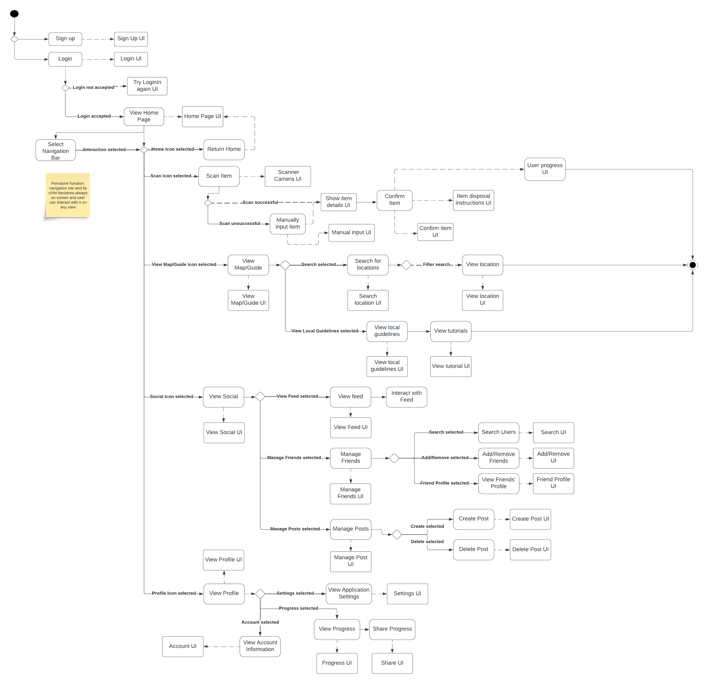

Trash2Treasure
The following is a group project that I worked on in one of my classes during Fall 2023.
Problem Statement
Trash2Treasure is an application that can be used to locate Recycling Centers, learn
about the recycling policies of specific Recycling Centers, learn how to properly recycle,
and track your recycling habits. Our application targets users who are looking to track how
much they recycle and/or become more environmentally friendly by learning how to recycle
properly.
Stakeholder Analysis
| Stakeholder |
Power |
Legitimacy |
Urgency |
| Recycling and Reclamation Workers |
High |
High |
Medium |
| Local Community Residents |
Medium |
High |
High |
| Government |
High |
High |
High |
| Local Businesses |
High |
High |
High |
| Environmental Activist Groups/Specialists |
Medium |
Medium |
Medium |
| Waste Management Companies |
High |
Medium |
Medium |
Stakeholder 1: Recycling and Reclamation Workers
| Stakeholder Evaluation Criteria |
What will YOU do |
| Communication and reports |
Report incidents such as contaminations or public service announcements regarding recycling initiatives |
| Job Satisfaction |
Recycling workers will have less sorting to deal with now that users are more well-informed about the recycling process and feel that their work is worthwhile and beneficial |
| Employment |
Promote employment opportunities and opportunities in local sectors of waste management and recycling |
Stakeholder 2: Local Community Residents
| Stakeholder Evaluation Criteria |
What will YOU do |
| Accessibility |
A way for people to recycle at home, so they do not have to move to recycle. Display information and instructions so community residents have all information in one place |
| Cost |
Make sure that the recycling process is cost-effective |
| Incentive |
Give users in the community an incentive to what to join the recycling project for example a point system or money |
Stakeholder 3: Government
| Stakeholder Evaluation Criteria |
What will YOU do |
| Promote hope in future climate conditions |
We will draw in more people who aren't environmentally cautious to start thinking about their contribution to climate change to promote more of a collective effort |
| Enforce legislation and regulations about recycling and waste disposal |
Promote and spread information about regulations in a way that is easy for users to understand and utilize |
| Re-allocation of climate change funding |
More users using our app allows for a more efficient recycling and waste management process, less funding is required to promote recycling initiatives and are able to go elsewhere to help different sectors of environmental protection |
Stakeholder 4: Local Businesses
| Stakeholder Evaluation Criteria |
What will YOU do |
| Community Engagement |
Strengthen ties with local community by participating in local recycling initiatives |
| Competitive Edge |
Make it easy for small businesses to maximize their waste reduction in order to make them stand out from other businesses who do not prioritize waste management and appeal to customers who value sustainability |
| Regulation Compliance |
Allow businesses to view local/federal regulations to ensure they are following all government issued rules and do not face penalties |
| Less waste, cost reduction |
Incentivize businesses by providing them with information on how much money they could be saving by reducing waste |
Stakeholder 5: Environmental Activist Groups/Specialists
| Stakeholder Evaluation Criteria |
What will YOU do |
| Influence public opinion |
Work with activist groups to get them to promote our product to like-minded individuals who want to make a change |
| Clearer recycling guidelines |
Communicate with specialist about what needs to be done to have each piece of trash recycled correctly or if it can be recycled |
| Hope for a better quality of life |
Preserve and improve efforts for environmental quality in local communities or nationwide |
Stakeholder 6: Waste Management Companies
| Stakeholder Evaluation Criteria |
What will YOU do |
| Expand |
These companies can expand their service and get more people involved in terms of jobs and voluntary work |
| Profit |
Companies can profit while they expand their business as that brings more money |
| Partnership |
Merge with other companies to expand the idea and people |
SCRUM User Stories
| User Story # |
User Story |
| 1 |
As a manager at a Recycling Center, I want to input items that our center is able to recycle so that people do not bring items to our Recycling Center that we are unable to properly recycle |
| 2 |
As a homeowner that recycles, I want to pin my local Recycling Center so that it is easier to find information about it |
| 3 |
As a person who is learning to recycle, I want to have an easy to read list of recycling symbols (such as the resin ID codes) so that I can learn what is recyclable and what is not |
| 4 |
As a thrift shopper, I want to find locations of thrift stores and goodwills so that I can donate/sell my old clothing items, accessories, etc. |
| 5 |
As a recycler, I want to locate recycling bins when I’m on the go so that I can recycle my waste instead of throwing it away |
| 6 |
As a recycler, I want to learn common ways people recycle incorrectly so that I can fix my mistakes and learn to recycle properly |
Use Case Diagram
Customer Journey Map
|
Awareness |
Research |
Acquire |
OOBE |
| Activities |
- Sees a friend using the app
- Finds out about it through other forms of media such as a poster, news, blog, etc
|
- Visit its website and social media pages, watching videos and looking at images
- Download the app and explore the features where they can make money
|
- Go to the App Store
- Download the app onto a device
|
- Guide users how to create account
- Set user preferences (profile, demographic, etc)
- Provide clear help menu for walkthroughs of functionality of app
|
| Motivations |
- Societal pressures to lower carbon footprint and show that they care about the environment
- Friends use the app
|
- Positive reviews and stories of successful research keep the user going and helping the environment
- Users are encouraged to actively participate due to the app's reward system, which offers money for recycling items
|
- Friend recommended it
- Wants to learn more about recycling
|
- Highlight and record environmental progress and impact
- Share record, progress, and milestones with other users
|
| Questions |
- Does the app cost money?
- Do other people like the app?
|
- Is the app compatible with different kinds of recyclables?
- Users might ask for evidence that the app is supported with the right data
|
- Do I think the app will be helpful?
- Do I think I will use the app?
|
- Do I need instructions?
- Can I manage user preferences after I initially sign up?
- Can I contact customer service for help in the app?
|
| Barriers |
- User does not care about recycling
- Lives in an area that does not have a recycling center
|
- Users might ask about complexity of the app and if any age group can understand it
- Users might doubt the security and privacy unless there is research that this is secure and trustworthy
|
- App is not compatible with my device
- Cannot find the app in the app store
|
- User's data is not secure enough
- Interface is not compatible enough with accessibility devices
|
Site Map
Our design approach began with a focus on our use cases, where we thought about how to organize them logically. We began by sketching out a layout for the home screen, and looking for the essential elements that should be there. Once we had a clear vision for the home page and navigation bar, it became simpler to group the information according to how we wanted our design to be structured. We decided to put distinct buttons on the home bar for each section, allowing users to easily access various parts of the app. For example, the navigation bar of our app would consist of the main functions: User Profile, Locate Center, How to Guide, Waste-Saved Progress, and Social. Within these sections, we placed the specific functions that belonged to each area. In the User Profile section the user will be able to manage general and security preferences as well as sign in and out. In the Locate Center section the user will be able to search the map in various ways and view details about each center such as if they are able to receive financial compensation there. The How to Guide screen will start with the user manually searching for an item or scanning an item. The next screen will provide steps for the user to follow to correctly throw out their item. The Waste-Saved Progress section is where the users rewards will be tracked and where they can find their recycling points and “Impact on environment.” Finally, the Social section is where the users can compete with one another in points and see updates on their friends’ status. This grouping approach ensures that users can navigate through the app with ease as each section and its contents are logically organized and accessible.
User Flow Diagram

This user flow model begins with the user creating an account or logging into their existing account. After the user successfully logs in, they will be brought to the app’s home page. At the bottom of this page (along with all the app’s pages besides the login and sign up pages), the user is able to access the navigation bar that can lead the user to any of the following pages: Home, Scan, Map/Guide, Social, and Profile.
Prototype
To view the prototype, click here! My group and I used Figma to create our prototype.
Moving Forward
If my group and I were to move forward with this project, we would make the
following edits to our project before continuing with user-testing:
- Ensure the entire application uses the elements, styles, and fonts listed
in the Style Guide that we made
- Make button areas larger and ensure all buttons are in places where they
will not be overlooked by users
- Create more visual feedback within the application for successful and
unsuccessful actions